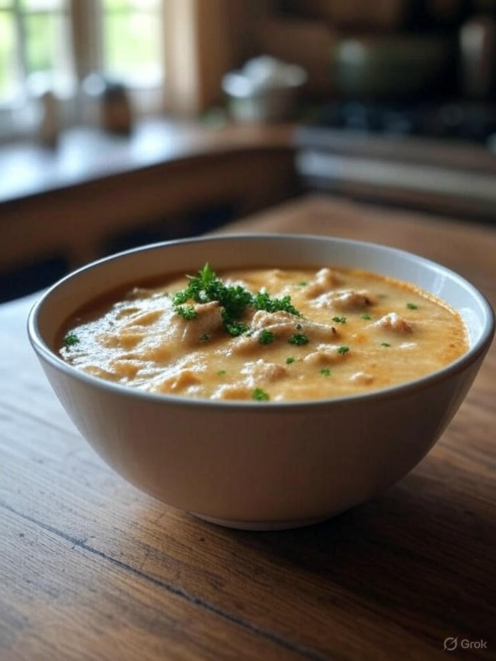

Home
White Chicken Lasagna Soup

Description
A creamy and comforting soup inspired by the flavors of lasagna, featuring tender chicken, pasta, and a rich broth. This dish combines Italian seasonings with fresh ingredients for a hearty meal, perfect for any season.
Ingredients
- 2 tablespoons unsalted butter
- 1 medium onion (finely chopped)
- 3 cloves fresh garlic (finely minced)
- 2 teaspoons Italian seasoning
- 1 teaspoon salt (reduce if not using low sodium broth)
- 1/4 teaspoon black pepper
- 1/4 teaspoon crushed red pepper flakes (more for extra spice)
- 3 cups low sodium chicken broth (use 4 cups for a thinner soup)
- 2 boneless skinless chicken breasts (about 300 grams)
- 1/4 cup sun-dried tomatoes (chopped - optional)
- 2 cups short dry pasta or broken lasagna noodles (about 120 grams - I use Mafalda Corta)
- 1 cup heavy cream (the higher the fat content, the richer the soup)
- 2 tablespoons cornstarch
- 1 cup fresh spinach (roughly chopped)
- Mozzarella cheese for garnish as desired
Steps
- Sauté aromatics and seasonings: In a pot or dutch oven, melt butter then add in the onions. Cook until slightly browned, then add in the seasonings. Cook for 1 minute.
- Add chicken and cook: Add the chicken broth, shredded chicken breasts, and tomatoes. Simmer.
- Cook the pasta: Separately, cook the pasta al dente according to package directions.
- Finish and serve: Whisk together cream and cornstarch and add that into the soup along with the cooked noodles and spinach. Serve topped with cheese!